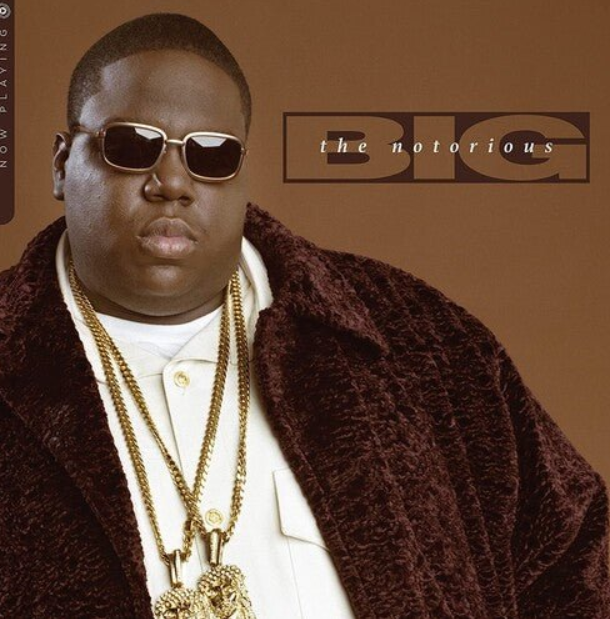

Christopher Wallace, known as The Notorious B.I.G., was born on May 21, 1972, in Brooklyn, New York. Growing up in a tough neighborhood, he turned to music and storytelling, developing a talent that would make him one of the most influential rappers of the 1990s. In 1994, he released his debut album, Ready to Die, featuring hits like “Juicy” and “Big Poppa.” Biggie was famous for his vivid storytelling, blending street life experiences with themes of ambition and success. His style and flow made him a central figure in East Coast hip-hop.
Biggie was also involved in the East Coast-West Coast rivalry, particularly with Tupac Shakur, which ultimately played a role in his tragic death. On March 9, 1997, he was fatally shot in Los Angeles, a crime that remains unsolved. Despite his short career, Biggie's influence continues through his music and the artists he inspired. He remains a symbol of hip-hop storytelling and talent, leaving a lasting legacy in the music world.